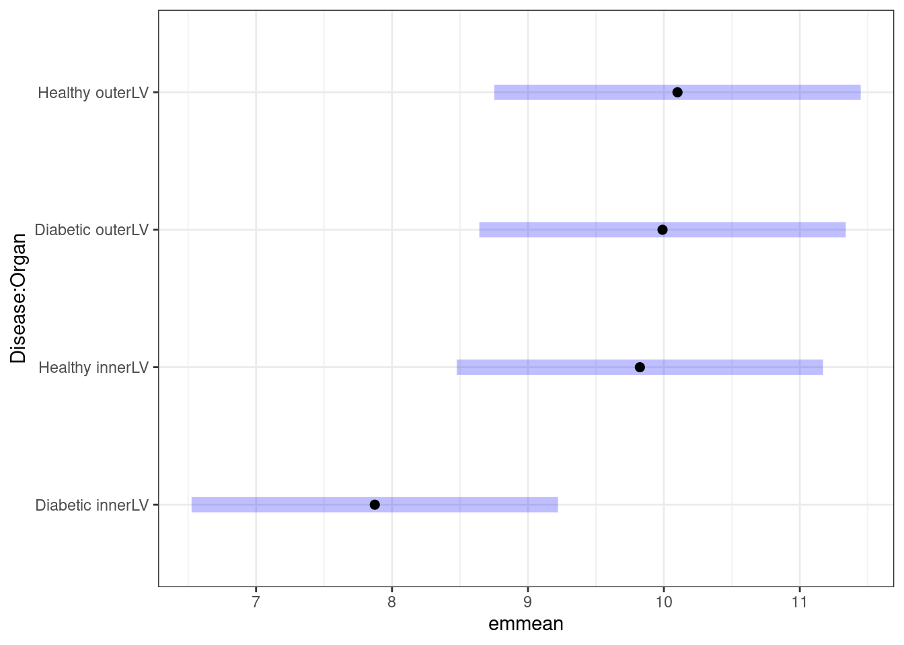

Linear mixed-effect models (LMMs)
Recall, blocking helps control variability by making treatment groups more alike. Experimental units are divided into subsets (called blocks) so that units within the same block are more similar than units from different subsets or blocks. Blocking is a technique for dealing with nuisance factors. A nuisance factor is a factor that has some effect on the response, but is of no interest (e.g., age class).
Fixed effects are terms (parameters) in a statistical model which are fixed, or non-random, quantities (e.g., treatment group's mean response). For the same treatment, we expect this quantity to be the same from experiment to experiment.
Random effects are terms (parameters) in a statistical model which are considered as random quantities or variables (e.g., block id). Specifically, terms whose levels are a representative sample from a population, and where the variance of the population is of interest should be allocated as random. Setting a block as a random effect allows us to infer variation between blocks as well as the variation between experimental units within blocks.
Key idea: Partition known sources of variation which are unimportant to key scientific question(s) to improve precision of comparisons between treatment means.
A Randomised Controlled Block Design (RCBD)
| Run | Surgery | Rat | logAUC8 |
|---|---|---|---|
| 1 | C | 1 | 9.24 |
| 1 | P | 2 | 8.81 |
| 1 | S | 3 | 10.75 |
| 2 | C | 4 | 3.89 |
| 2 | P | 5 | 8.62 |
| 2 | S | 6 | 10.24 |
| 3 | C | 7 | 8.42 |
| 3 | P | 8 | 9.93 |
| 3 | S | 9 | 11.68 |
| 4 | C | 10 | 8.77 |
| 4 | P | 11 | 10.86 |
| 4 | S | 12 | 13.05 |
You can read these data directly into R:
rcbd <- readr::read_csv("https://raw.githubusercontent.com/STATS-UOA/databunker/master/data/rcbd.csv")To use predictmeans later on we have to ensure that the relevant variables are coded as factors:
rcbd <- rcbd %>%
mutate(Run = as.factor(Run)) %>%
mutate(Surgery = as.factor(Surgery))Run as a fixed effect
lm <- lm(logAUC8 ~ Run + Surgery, data = rcbd)
summary(lm)##
## Call:
## lm(formula = logAUC8 ~ Run + Surgery, data = rcbd)
##
## Residuals:
## Min 1Q Median 3Q Max
## -1.7517 -0.3683 -0.0900 0.4508 1.5817
##
## Coefficients:
## Estimate Std. Error t value Pr(>|t|)
## (Intercept) 7.6583 0.8506 9.004 0.000105 ***
## Run2 -2.0167 0.9822 -2.053 0.085854 .
## Run3 0.4100 0.9822 0.417 0.690882
## Run4 1.2933 0.9822 1.317 0.235963
## SurgeryP 1.9750 0.8506 2.322 0.059293 .
## SurgeryS 3.8500 0.8506 4.526 0.003991 **
## ---
## Signif. codes: 0 '***' 0.001 '**' 0.01 '*' 0.05 '.' 0.1 ' ' 1
##
## Residual standard error: 1.203 on 6 degrees of freedom
## Multiple R-squared: 0.8449, Adjusted R-squared: 0.7157
## F-statistic: 6.538 on 5 and 6 DF, p-value: 0.02034Run as a random effect
There are, confusingly, two ways of fitting the same model. For inference we require both!
Option 1 uses the lmer function from the lme4 package:
lmer4_mod <- lme4::lmer(logAUC8 ~ Surgery + (1|Run), data = rcbd)
summary(lmer4_mod)## Linear mixed model fit by REML ['lmerMod']
## Formula: logAUC8 ~ Surgery + (1 | Run)
## Data: rcbd
##
## REML criterion at convergence: 37.2
##
## Scaled residuals:
## Min 1Q Median 3Q Max
## -1.8525 -0.2273 0.1772 0.4036 1.3309
##
## Random effects:
## Groups Name Variance Std.Dev.
## Run (Intercept) 1.479 1.216
## Residual 1.447 1.203
## Number of obs: 12, groups: Run, 4
##
## Fixed effects:
## Estimate Std. Error t value
## (Intercept) 7.5800 0.8552 8.863
## SurgeryP 1.9750 0.8506 2.322
## SurgeryS 3.8500 0.8506 4.526
##
## Correlation of Fixed Effects:
## (Intr) SrgryP
## SurgeryP -0.497
## SurgeryS -0.497 0.500Option 2 uses the lmer function from the lmerTest package:
lmerTest_mod <- lmerTest::lmer(logAUC8 ~ Surgery + (1|Run), data = rcbd)
summary(lmerTest_mod)## Linear mixed model fit by REML. t-tests use Satterthwaite's method [
## lmerModLmerTest]
## Formula: logAUC8 ~ Surgery + (1 | Run)
## Data: rcbd
##
## REML criterion at convergence: 37.2
##
## Scaled residuals:
## Min 1Q Median 3Q Max
## -1.8525 -0.2273 0.1772 0.4036 1.3309
##
## Random effects:
## Groups Name Variance Std.Dev.
## Run (Intercept) 1.479 1.216
## Residual 1.447 1.203
## Number of obs: 12, groups: Run, 4
##
## Fixed effects:
## Estimate Std. Error df t value Pr(>|t|)
## (Intercept) 7.5800 0.8552 5.9567 8.863 0.000119 ***
## SurgeryP 1.9750 0.8506 6.0000 2.322 0.059293 .
## SurgeryS 3.8500 0.8506 6.0000 4.526 0.003991 **
## ---
## Signif. codes: 0 '***' 0.001 '**' 0.01 '*' 0.05 '.' 0.1 ' ' 1
##
## Correlation of Fixed Effects:
## (Intr) SrgryP
## SurgeryP -0.497
## SurgeryS -0.497 0.500As you can see they give the same output! Why bother, you might ask?! This will become apparent later on.
Inference about the random effects
We have two variance components
- Between Groups (Runs) \(\hat{\sigma^2}_{\text{Run}}\) = 1.479
- Within Runs (between observations) \(\hat{\sigma_2}\) = 1.447
Note that aov() presents the same information, but in a different way:
summary(aov(logAUC8 ~ Surgery + Error(Run), data = rcbd))##
## Error: Run
## Df Sum Sq Mean Sq F value Pr(>F)
## Residuals 3 17.65 5.883
##
## Error: Within
## Df Sum Sq Mean Sq F value Pr(>F)
## Surgery 2 29.652 14.826 10.25 0.0116 *
## Residuals 6 8.682 1.447
## ---
## Signif. codes: 0 '***' 0.001 '**' 0.01 '*' 0.05 '.' 0.1 ' ' 1- Within Runs (Residuals) \(\hat{\sigma}_2\) = 1.447 (same as
lmer) - Between Run variance = \(\hat{\sigma}^2\) + \(3\:\hat{\sigma}^2_{\text{Run}}\) so \(\hat{\sigma}^2_{\text{Run}} = \frac{5.883 - \hat{\sigma}^2 }{3} = \frac{5.883 - 1.447}{3} = 1.479\)
Inference about the fixed effects
Specifying Run as random effect changes our estimated baseline (i.e., Intercept coefficient) as now and effect due to Run is attributed to the structural component of the model.
We can interpret the fixed effects of a LMM as we might for a linear model (now the Intercept estimate changes depending on Run).
coefficients(lmer4_mod)## $Run
## (Intercept) SurgeryP SurgeryS
## 1 7.639067 1.975 3.85
## 2 6.118411 1.975 3.85
## 3 7.948225 1.975 3.85
## 4 8.614297 1.975 3.85
##
## attr(,"class")
## [1] "coef.mer"coefficients(lmerTest_mod)## $Run
## (Intercept) SurgeryP SurgeryS
## 1 7.639067 1.975 3.85
## 2 6.118411 1.975 3.85
## 3 7.948225 1.975 3.85
## 4 8.614297 1.975 3.85
##
## attr(,"class")
## [1] "coef.mer"What about an ANOVA table? NOTE that specifying the type of \(SS\) (e.g., Type I, II, or III) in an anova call only works with a model fitted using lmerTest::lmer:
anova(lmerTest_mod, type = 1)## Type I Analysis of Variance Table with Satterthwaite's method
## Sum Sq Mean Sq NumDF DenDF F value Pr(>F)
## Surgery 29.652 14.826 2 6 10.246 0.01162 *
## ---
## Signif. codes: 0 '***' 0.001 '**' 0.01 '*' 0.05 '.' 0.1 ' ' 1anova(lmerTest_mod, type = 2)## Type II Analysis of Variance Table with Satterthwaite's method
## Sum Sq Mean Sq NumDF DenDF F value Pr(>F)
## Surgery 29.652 14.826 2 6 10.246 0.01162 *
## ---
## Signif. codes: 0 '***' 0.001 '**' 0.01 '*' 0.05 '.' 0.1 ' ' 1Now, as we only have a single fixed effect in our model (Surgery) the ANOVA Type I and Type II tables above are equivalent!
Inference using predictmeans() (Note: output will be the same for the lmerTest model.)
library(predictmeans)
pm <- predictmeans(lmer4_mod, modelterm = "Surgery", pairwise = TRUE, plot = FALSE)Using the elements of the predictmeans object (as in the last section) we can extract the pairwise comparison information:
pm$`Pairwise LSDs`## C P S
## C 0.00000 -1.97500 -3.850
## P 2.08132 0.00000 -1.875
## S 2.08132 2.08132 0.000
## attr(,"Significant level")
## [1] 0.05
## attr(,"Degree of freedom")
## [1] 6
## attr(,"Note")
## [1] "LSDs matrix has mean differences (row-col) above the diagonal, LSDs (adjusted by 'none' method) below the diagonal"print(pm$`Pairwise p-value`)## C P S
## C 0.0000 -2.3219 -4.5263
## P 0.0593 0.0000 -2.2043
## S 0.0040 0.0697 0.0000
## attr(,"Degree of freedom")
## [1] 6
## attr(,"Note")
## [1] "The matrix has t-value above the diagonal, p-value (adjusted by 'none' method) below the diagonal"
## attr(,"Letter-based representation of pairwise comparisons at significant level '0.05'")
## Treatment Mean Group
## 1 S 11.430 A
## 2 P 9.555 AB
## 3 C 7.580 BGives us 1) pairwise differences (upper diagonal) and the LSD values (lower diagonal), and 2) the pairwise comparison statistic (the \(t\)-statistic in this case) on the upper diagonal and the associated p-value's on the lower diagonal.
So is there a pairwise difference in means? Let's organise the information in a table.
## Comparison Difference SED LSD lwr upr t p
## 1 C-P -1.975 0.851 2.081 -4.056 0.106 -2.322 0.0593
## 2 C-S -3.850 0.851 2.081 -5.931 -1.769 -4.526 0.0040
## 3 P-S -1.875 0.851 2.081 -3.956 0.206 -2.204 0.0697Have a look at the CIs and p-values. What do you conclude?
We could also plot the pairwise comparisons:

A Split-plot design
| Disease | Organ | Animal | Sample | logAUC |
|---|---|---|---|---|
| Healthy | innerLV | 1 | 1 | 9.40 |
| Healthy | outerLV | 1 | 2 | 8.83 |
| Healthy | innerLV | 2 | 1 | 10.33 |
| Healthy | outerLV | 2 | 2 | 10.49 |
| Healthy | innerLV | 3 | 1 | 9.74 |
| Healthy | outerLV | 3 | 2 | 10.98 |
| Diabetic | innerLV | 4 | 1 | 7.92 |
| Diabetic | outerLV | 4 | 2 | 9.37 |
| Diabetic | innerLV | 5 | 1 | 8.69 |
| Diabetic | outerLV | 5 | 2 | 11.31 |
| Diabetic | innerLV | 6 | 1 | 7.01 |
| Diabetic | outerLV | 6 | 2 | 9.29 |
You can read these data directly into R:
split_plot <- readr::read_csv("https://raw.githubusercontent.com/STATS-UOA/databunker/master/data/split_plot.csv")To use predictmeans later on we have to ensure that the relevant variables are coded as factors:
split_plot <- split_plot %>%
mutate(Animal = as.factor(Animal)) %>%
mutate(Disease = as.factor(Disease))%>%
mutate(Organ = as.factor(Organ))Animal as a random effect
Using aov()
sp_aov <- aov(logAUC ~ Disease*Organ + Error(Animal), data = split_plot)
summary(sp_aov)##
## Error: Animal
## Df Sum Sq Mean Sq F value Pr(>F)
## Disease 1 3.183 3.183 2.187 0.213
## Residuals 4 5.822 1.456
##
## Error: Within
## Df Sum Sq Mean Sq F value Pr(>F)
## Organ 1 4.296 4.296 14.423 0.0191 *
## Disease:Organ 1 2.539 2.539 8.525 0.0433 *
## Residuals 4 1.191 0.298
## ---
## Signif. codes: 0 '***' 0.001 '**' 0.01 '*' 0.05 '.' 0.1 ' ' 1Using lmer() (from lmeTest and lmer4)
Recall that specifying the type of \(SS\) (e.g., Type I, II, or III) in an anova call only works with a model fitted using lmerTest::lmer. As we now have specified an interaction model then the type of \(SS\) calculated will have an effect on inference for unbalanced designs.
sp_lmer <- lmerTest::lmer(logAUC ~ Disease*Organ + (1|Animal),
data = split_plot)
anova(sp_lmer,type = 1)## Type I Analysis of Variance Table with Satterthwaite's method
## Sum Sq Mean Sq NumDF DenDF F value Pr(>F)
## Disease 0.6513 0.6513 1 4 2.1866 0.21329
## Organ 4.2960 4.2960 1 4 14.4227 0.01914 *
## Disease:Organ 2.5392 2.5392 1 4 8.5246 0.04326 *
## ---
## Signif. codes: 0 '***' 0.001 '**' 0.01 '*' 0.05 '.' 0.1 ' ' 1anova(sp_lmer,type = 2)## Type II Analysis of Variance Table with Satterthwaite's method
## Sum Sq Mean Sq NumDF DenDF F value Pr(>F)
## Disease 0.6513 0.6513 1 4 2.1866 0.21329
## Organ 4.2960 4.2960 1 4 14.4227 0.01914 *
## Disease:Organ 2.5392 2.5392 1 4 8.5246 0.04326 *
## ---
## Signif. codes: 0 '***' 0.001 '**' 0.01 '*' 0.05 '.' 0.1 ' ' 1Note here, though, our design is balanced hence the ordering of terms in our model does not make a difference (no need to specify Type II \(SS\))
Pairwise comparison of time means
When a design has blocking, to get summary stats using predictmeans you should fit the model using lme4::lmer():
Calling predictmeans alone produces plots:
lmer <- lme4::lmer(logAUC ~ Disease*Organ + (1|Animal),
data = split_plot)
predmeans <- predictmeans::predictmeans(model = lmer ,modelterm = "Disease:Organ",
pairwise = TRUE)predmeans$predictmeansPlot
Recall from previous sections that the LSD vale is essentially the buffer around the point estimate (the radius of the CI if you like), beyond the limit of which we might believe there to be a significant difference (a bit lax with terminology there!).
How would be interpret the above plot? I would conclude that there is a big difference between Diabetic and Healthy for InnerLV wall, but no difference for the outerLV wall. We can construct the pairwise comparison table:
comparisons(predmeans)## Comparison Difference SED LSD lwr upr t
## 1 Diabetic:innerLV-Diabetic:outerLV -2.117 0.446 1.237 -3.354 -0.879 -4.750
## 2 Diabetic:innerLV-Healthy:innerLV -1.950 0.764 2.123 -4.073 0.173 -2.551
## 3 Diabetic:innerLV-Healthy:outerLV -2.227 0.764 2.123 -4.349 -0.104 -2.913
## 4 Diabetic:outerLV-Healthy:innerLV 0.167 0.765 2.123 -1.956 2.289 0.218
## 5 Diabetic:outerLV-Healthy:outerLV -0.110 0.764 2.123 -2.233 2.013 -0.144
## 6 Healthy:innerLV-Healthy:outerLV -0.277 0.446 1.237 -1.514 0.961 -0.621
## p
## 1 0.0090
## 2 0.0633
## 3 0.0436
## 4 0.8381
## 5 0.8925
## 6 0.5683What do the CI coverages indicate?
We can also use emmeans to plot the pairwise comparisons
em <- emmeans::emmeans(lmer, ~Disease*Organ)
plot(em, pairwise = TRUE) + theme_bw()
From all the output above, what do you conclude about the interaction effect, if any!
A repeated measures design
Here we will use time points as factors. To read these data directly into R use
liver <- readr::read_csv("https://raw.githubusercontent.com/STATS-UOA/databunker/master/data/repeated_measures_liver.csv")
liver <- liver %>%
mutate(Time = as.factor(Time)) %>%
mutate(Treatment = as.factor(Treatment))
liver## # A tibble: 210 × 4
## Animal Treatment Time Glucose
## <chr> <fct> <fct> <dbl>
## 1 Control1 Control 0 1.60
## 2 Control1 Control 5 1.28
## 3 Control1 Control 10 1.60
## 4 Control1 Control 15 1.58
## 5 Control1 Control 20 1.28
## 6 Control1 Control 25 1.44
## 7 Control1 Control 30 1.18
## 8 Control2 Control 0 0.84
## 9 Control2 Control 5 0.64
## 10 Control2 Control 10 0.7
## # … with 200 more rowsBelow these data are plotted.

Animal as a random effect
Using aov()
re_aov <- aov(Glucose ~ Treatment*Time + Error(Animal),data = liver)
summary(re_aov)##
## Error: Animal
## Df Sum Sq Mean Sq F value Pr(>F)
## Treatment 3 1.90 0.6335 1.407 0.263
## Residuals 26 11.71 0.4503
##
## Error: Within
## Df Sum Sq Mean Sq F value Pr(>F)
## Time 6 0.7973 0.13289 8.732 0.0000000334 ***
## Treatment:Time 18 0.2539 0.01411 0.927 0.547
## Residuals 156 2.3741 0.01522
## ---
## Signif. codes: 0 '***' 0.001 '**' 0.01 '*' 0.05 '.' 0.1 ' ' 1Using lmer() (from lmerTest and lme4)
Recall that specifying the type of \(SS\) (e.g., Type I, II, or III) in an anova call only works with a model fitted using lmerTest::lmer. As we now have specified an interaction model then the type of \(SS\) calculated will have an effect on inference for unbalanced designs.
re_lmer <- lmerTest::lmer(Glucose ~ Treatment*Time + (1|Animal), data = liver)
anova(re_lmer,type = 2)## Type II Analysis of Variance Table with Satterthwaite's method
## Sum Sq Mean Sq NumDF DenDF F value Pr(>F)
## Treatment 0.06423 0.021409 3 26 1.4068 0.2632
## Time 0.79731 0.132885 6 156 8.7318 0.00000003345 ***
## Treatment:Time 0.25390 0.014105 18 156 0.9269 0.5474
## ---
## Signif. codes: 0 '***' 0.001 '**' 0.01 '*' 0.05 '.' 0.1 ' ' 1Pairwise comparison of time means
As above, when a design has blocking, to get summary stats using predictmeans you should fit the model using lme4::lmer():
re_lmer4 <- lme4::lmer(Glucose ~ Treatment*Time + (1|Animal),data = liver)
predmeans <- predictmeans::predictmeans(model = re_lmer4 ,modelterm = "Time",
pairwise = TRUE, plot = TRUE)How would be interpret the above plot?
What about the pairwise comparison table?
comparisons(predmeans)## Comparison Difference SED LSD lwr upr t p
## 1 0-5 0.058 0.032 0.063 -0.005 0.121 1.830 0.0691
## 2 0-10 0.080 0.032 0.063 0.017 0.143 2.512 0.0130
## 3 0-15 0.111 0.032 0.063 0.048 0.174 3.473 0.0007
## 4 0-20 0.149 0.032 0.063 0.086 0.212 4.675 0.0000
## 5 0-25 0.145 0.032 0.063 0.082 0.208 4.531 0.0000
## 6 0-30 0.205 0.032 0.063 0.142 0.268 6.421 0.0000
## 7 5-10 0.022 0.032 0.063 -0.041 0.085 0.682 0.4961
## 8 5-15 0.052 0.032 0.063 -0.011 0.116 1.643 0.1025
## 9 5-20 0.091 0.032 0.063 0.028 0.154 2.845 0.0050
## 10 5-25 0.086 0.032 0.063 0.023 0.149 2.701 0.0077
## 11 5-30 0.147 0.032 0.063 0.083 0.210 4.591 0.0000
## 12 10-15 0.031 0.032 0.063 -0.032 0.094 0.960 0.3384
## 13 10-20 0.069 0.032 0.063 0.006 0.132 2.163 0.0321
## 14 10-25 0.064 0.032 0.063 0.001 0.127 2.018 0.0453
## 15 10-30 0.125 0.032 0.063 0.062 0.188 3.909 0.0001
## 16 15-20 0.038 0.032 0.063 -0.025 0.101 1.202 0.2310
## 17 15-25 0.034 0.032 0.063 -0.029 0.097 1.058 0.2917
## 18 15-30 0.094 0.032 0.063 0.031 0.157 2.948 0.0037
## 19 20-25 -0.005 0.032 0.063 -0.068 0.058 -0.144 0.8853
## 20 20-30 0.056 0.032 0.063 -0.007 0.119 1.746 0.0828
## 21 25-30 0.060 0.032 0.063 -0.003 0.123 1.890 0.0606What do the CI coverages indicate?
We can also use emmeans to plot the pairwise comparisons
em <- emmeans::emmeans(re_lmer4, ~Treatment*Time)
plot(em, pairwise = TRUE) + theme_bw() + facet_wrap(~Treatment)